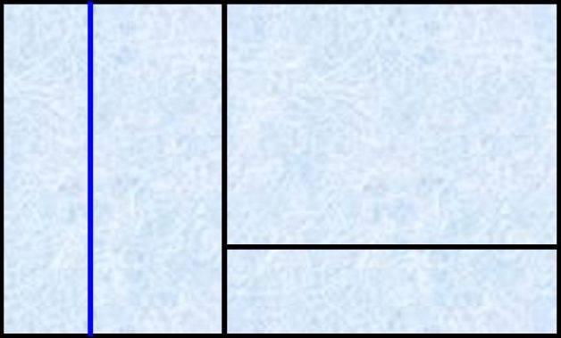
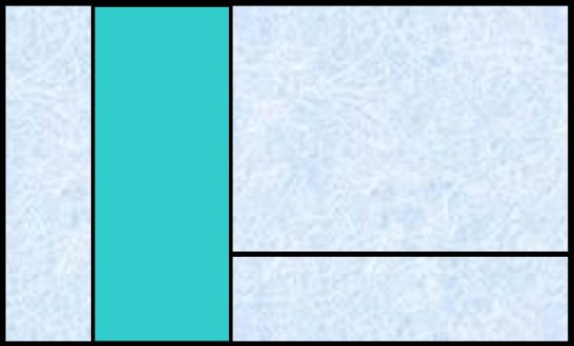
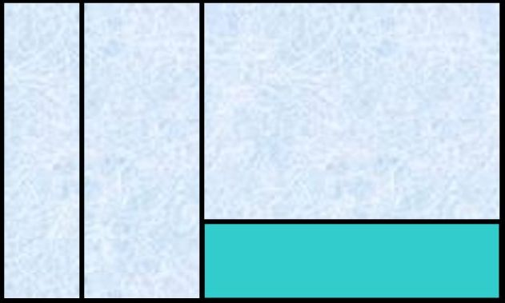
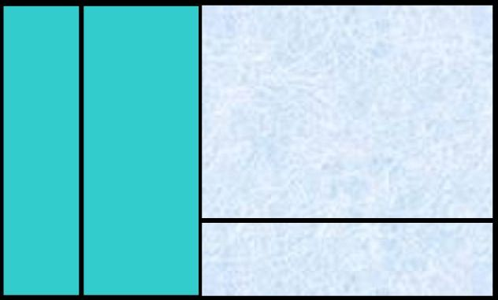

tables
floats
positioning and inline-block
flexbox
Grid Container
Grid Item
Grid Line
Grid Track
Grid Cell
Grid Area

.container {
display: grid;
grid-template-rows: repeat (6, 1fr);
grid-template-columns: repeat (3, 1fr);
}
.container {
"door empty empty chest chest boarde"
"empty carpet carpet carpet carpet window"
"empty sofa sofa sofa desk desk";
}
overflow-x breaks the Grid 😞
overflow-x: auto does not repair 😭
overflow: hidden does not repair 😱
.grid > * { min-width: 0; } is good 🙌
This is not the end, just the last slide 😉
Have a nice day and thank you for your attention 🙋